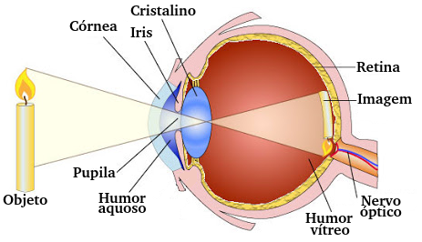
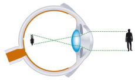
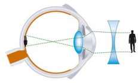
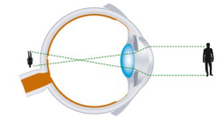
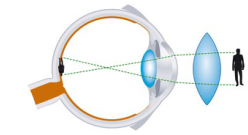
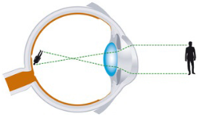
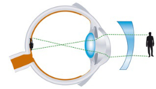

O olho humano é um instrumento óptico composto por um conjunto de lentes multifocais, meios transparentes e células fotossensíveis que possibilitam o sentido da visão.
|
 |
A luz é difusamente refletida e/ou emitida pelo objeto; alguns raios penetram um pequeno orifício, passam por uma lente convergente e tocam um anteparo composto de células fotossensíveis, que converterão essa impressão em impulso elétrico, o qual, em seguida, será interpretado pelo cérebro. |
CórneaÉ o elemento mais externo do olho humano; exerce a função de camada protetora e, também, de lente convergente. |
Íris e pupilaA íris é o elemento capaz de controlar a quantidade de luz que penetra no olho; ela possui um orifício de tamanho variado denominado pupila (que varia aproximadamente de 1,5 mm a 8 mm). A íris é a parte que dá cor aos olhos. |
|
Humor vítreoÉ um composto translúcido de textura viscosa que tem por objetivo, entre outras coisas, manter o formato arredondado do globo ocular. |
CristalinoÉ um elemento constituído basicamente de água (cerca de 65%) e proteínas (cerca de 35%); possui textura viscosa e comportamento elástico. O cristalino é uma lente convergente, de borda fina e multifocal, isto é, capaz de autorregular a sua convergência, adaptando seu foco à situação enfrentada pelo observador. |
|
RetinaÉ uma membrana altamente sensível à luz, composta essencialmente de dois tipos de células fotorreceptoras: → Cones: responsáveis pela identificação de cores → Bastonetes: responsáveis pela diferenciação de tonalidades Após essas células serem sensibilizadas, é gerado um sinal elétrico que é prontamente enviado ao cérebro por via do nervo óptico. |
Nervo ópticoEstrutura que liga o órgão ocular ao cérebro. É responsável por transmitir os impulsos elétricos ao cérebro, que os interpretará, convertendo-os em imagem visual. |
Um olho “regulado” para refratar corretamente a luz e formar imagens nítidas é chamado olho emetrope. Já um olho incapaz disso é denominado olho amétrope, e suas irregularidades, ametropias.
Miopia: Ocorre quando o conjunto de lentes do olho (córnea e cristalino) possui um índice de convergência demasiadamente elevado para o globo ocular em questão. Como consequência desse desajuste, a imagem nítida é formada antes de chegar à retina. Como o problema é oriundo do excesso de convergência de imagens, podemos corrigir o defeito pondo, entre a imagem e o olho, uma lente divergente, que, então, divergirá os raios, fazendo com que eles cheguem em formato adequado à retina.
|
Olho míope |
Miopia corrigida |
|
 |
 |
Hipermetropia: Ocorre quando o conjunto de lentes do olho (córnea e cristalino) possui um índice de convergência demasiadamente pequeno para o globo ocular em questão. Como consequência desse desajuste, a imagem nítida é formada depois da retina. Como o problema é oriundo da falta de convergência de imagens, podemos corrigir o defeito colocando, entre a imagem e o olho, uma lente convergente, que, então, convergirá os raios, fazendo com que eles cheguem em formato adequado à retina.
|
Olho hipermetrope |
Hipermetropia corrigida |
|
 |
 |
Presbiopia: A presbiopia, conhecida popularmente como vista cansada, é uma ametropia associada ao envelhecimento do olho humano. Ocorre que, com o desgaste do olho, o cristalino perde a elasticidade e, consequentemente, não consegue mais movimentar-se de modo a elevar o seu contingente de refração. O olho presbita tem, em decorrência do que foi exposto, dificuldade para enxergar de perto. Esse problema pode ser corrigido por meio de lentes multifocais (uma lente que, para objeto próximo, convirja os raios; para objetos distantes, não necessariamente).
Astigmatismo: É uma ametropia proveniente de irregularidades na curvatura da córnea. Com efeito, um olho que sofre de astigmatismo refrata a luz em direções aleatórias e não forma imagens nítidas, mas borrões. A correção desse problema pode se dar pela aplicação de lentes cilíndricas, conhecidas também como tóricas (não se estuda esse tipo de lente no ensino médio).
|
Olho astigmático |
Astigmatismo corrigido |
|
 |
 |